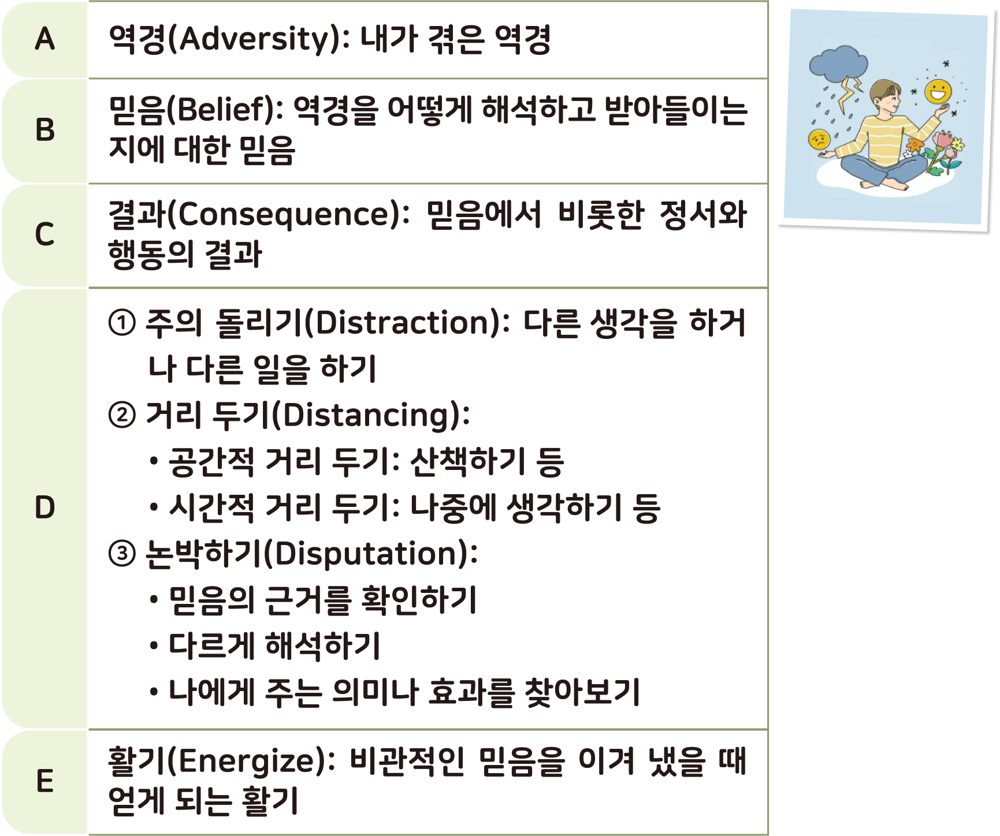
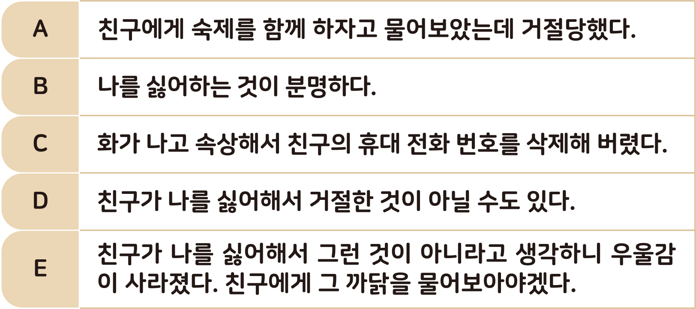

활동하기 ABCDE 방법: 부정적인 마음을 관리하고 조절하기
● 다음은 긍정적인 마음을 갖기 위해 부정적이고 비관적인 마음을 관리하고 조절할 수 있는 ABCDE 방법이다. 예시를 보고, 내가 겪고 있는 역경에 대한 마음을 바꾸는 연습을 해보자.

2 다음은 긍정적인 마음을 갖기 위해 부정적이고 비관적인 마음을 관리하고 조절할 수 있는 ABCDE 방법이다. 예시를 보고, 내가 겪고 있는 역경에 대한 마음을 바꾸는 연습을 해보자.
